تقنية9 دقائق
أربعة فلاقشيب صينية تحت المجهر: ماذا تكشف تقييمات المستخدمين عن التجربة الفعلية؟
لم تعد المواصفات وحدها كافية للحكم على الهواتف الرائدة؛ فالأرقام المعلنة لا تكشف دائمًا عن تجربة الاستخدام اليومية، ومدى استقرار الأداء، ورضا الملاك بعد فترة من الاستخدام.
في هذه المقارنة، نسلّط الضوء على أربعة أجهزة رائدة هي vivo X500 Pro Max وXiaomi 18 Pro Max وOPPO Find X10 Pro Max وHONOR Magic9 Pro Max، بالاعتماد على تقييمات المستخدمين في منصة Coolapk، إلى جانب بيانات تجارب البطارية وملاحظات الأداء والشاشة والكاميرات الواردة في المراجعات الأخرى.

أولًا: ترتيب الأجهزة حسب التقييم العام
| الترتيب | الهاتف | التقييم |
|---|---|---|
| 1 | HONOR Magic9 Pro Max | 9.5/10 |
| 2 | OPPO Find X10 Pro Max | 9.2/10 |
| 3 | vivo X500 Pro Max | 9.1/10 |
| 4 | Xiaomi 18 Pro Max | 7.7/10 |
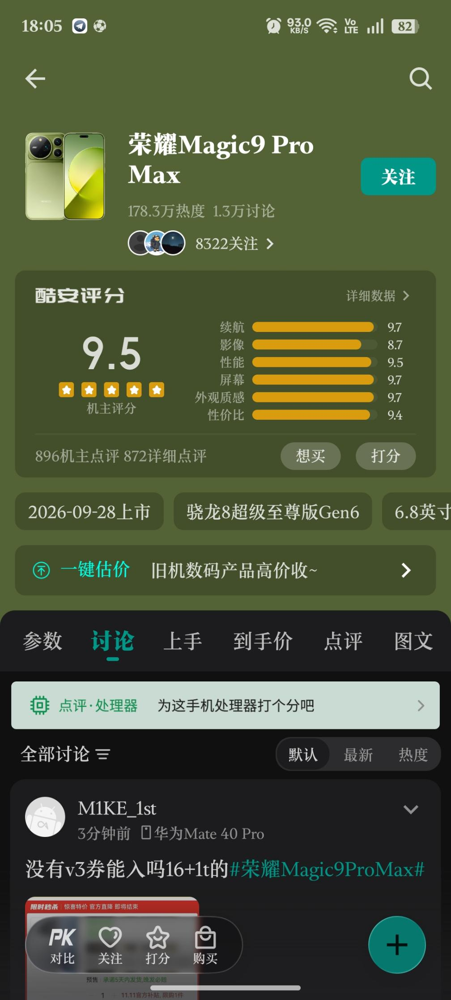
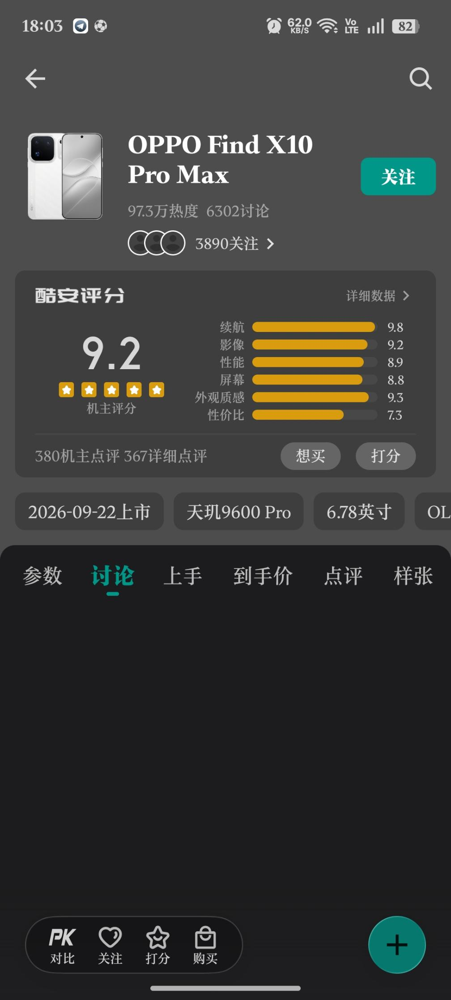
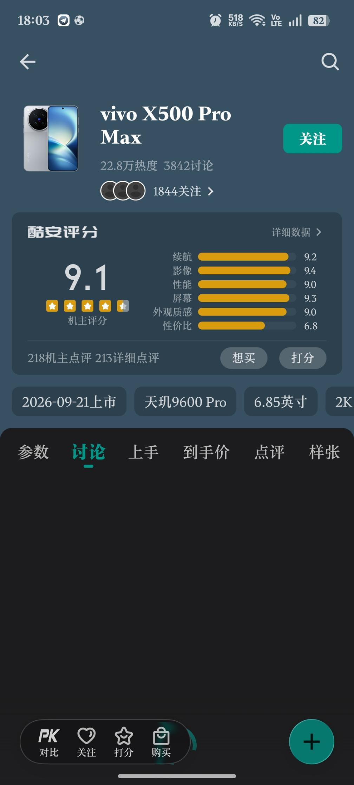
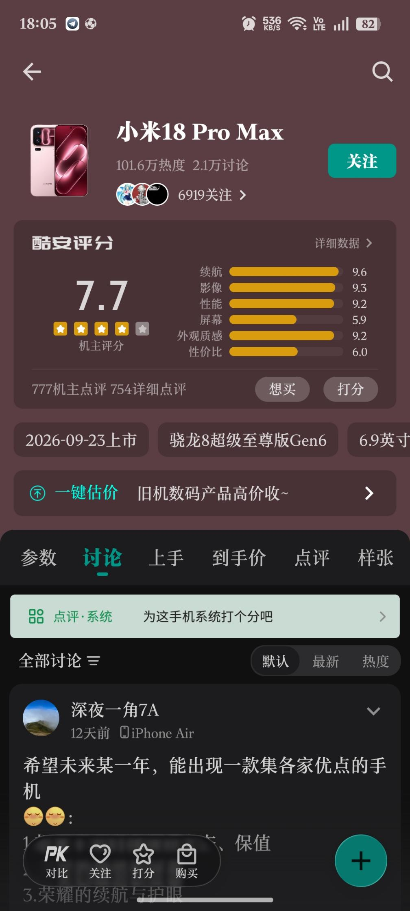
يتصدر HONOR القائمة من حيث التقييم الإجمالي، لكن الفارق في الأرقام لا يكفي وحده لتحديد أفضل تجربة استخدام. فالتقييمات التفصيلية تكشف اختلافًا واضحًا في نقاط القوة والضعف بين الأجهزة الأربعة.
HONOR Magic9 Pro Max: توازن قوي في تقييمات الملاك
حصل الهاتف على تقييم إجمالي يبلغ 9.5/10، وهو الأعلى بين الأجهزة الأربعة وفقًا للبيانات المتاحة. وتشير التقييمات التفصيلية إلى نتائج قوية في البطارية والشاشة والأداء:
- البطارية: 9.7/10.
- الشاشة: 9.7/10.
- الأداء: 9.5/10.
- متوسط وقت الشاشة: 10.6 ساعات، وفقًا لعينة تضم 81 مشاركًا.
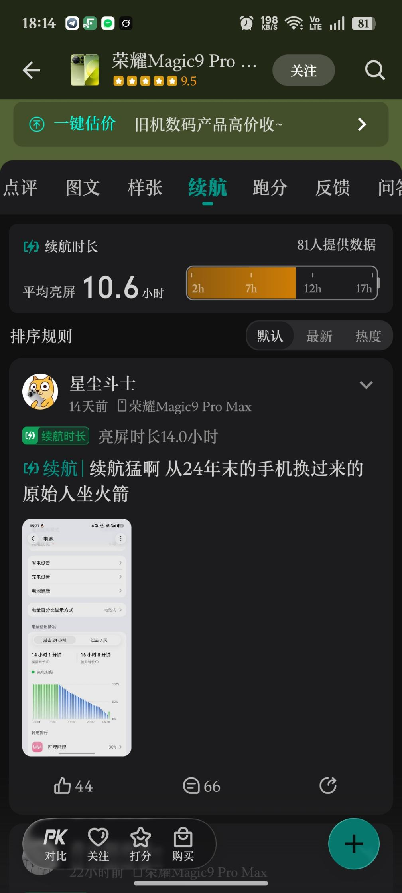
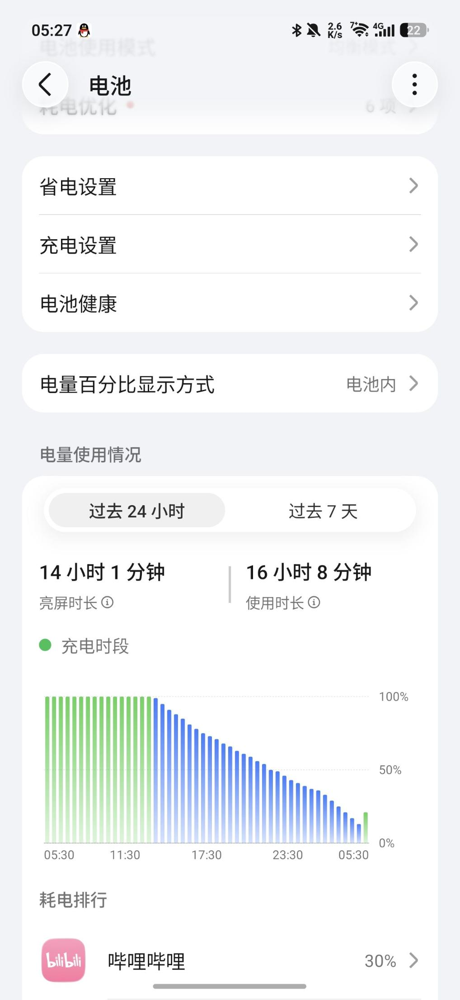
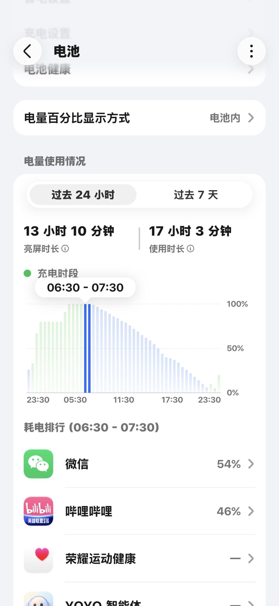
تُظهر هذه الأرقام رضا مرتفعًا عن البطارية والشاشة، بينما تشير تجارب الاستخدام المذكورة إلى أن سعة البطارية البالغة 8800mAh والسطوع المرتفع للشاشة من أبرز نقاط الجذب في الجهاز.
وفي التصوير، يبرز التعاون مع ARRI في تقديم معالجة فيديو بطابع سينمائي، وهو جانب قد يجذب المهتمين بتصوير الفيديو، وليس الصور الثابتة فقط.
لكن التجربة ليست خالية من الملاحظات. فقد ظهرت تقارير مبكرة عن ارتفاع الحرارة حتى في الاستخدام الخفيف، إلى جانب مشكلات استقرار لدى بعض المستخدمين، مع تحسن ملحوظ لدى عدد منهم بعد التحديثات. كما أن الوزن وبروز وحدة الكاميرا قد لا يناسبان الجميع.
يقدم HONOR مؤشرات قوية على رضا المستخدمين، لكن الحكم على استقراره الحراري يتطلب متابعة التجارب على مدى أطول.
OPPO Find X10 Pro Max: البطارية أبرز نقاط القوة
حصل الهاتف على تقييم عام يبلغ 9.2/10، مع نتائج لافتة في البطارية وجودة التصميم. وتوضح لقطة Coolapk تفاصيل أكثر عن التقييم:
| المعيار | التقييم |
|---|---|
| البطارية | 9.8/10 |
| جودة التصميم والخامات | 9.3/10 |
| التصوير | 9.2/10 |
| الشاشة | 8.8/10 |
| الأداء | 8.9/10 |
| القيمة مقابل السعر | 7.3/10 |
استند التقييم العام إلى 380 تقييمًا من الملاك، بينما بلغ عدد التقييمات التفصيلية 367. كما أظهرت المنصة نسبة تقييمات إيجابية قدرها 92% خلال آخر 30 يومًا وقت التقاط الصورة.
وتبرز البطارية باعتبارها أقوى عناصر الهاتف تقييمًا، فيما حصل التصميم والخامات على نتيجة مرتفعة أيضًا. أما الشاشة والأداء، فحققا تقييمين جيدين دون أن يكونا الأعلى في هذه المجموعة.
وفي جانب التصوير، تشير البيانات المقدمة إلى منظومة تضم ثلاث كاميرات بدقة 200MP لكل منها، مع نتائج قوية في التصوير النهاري. لكن تعدد الكاميرات عالية الدقة لا يضمن وحده تفوقًا في جميع الظروف؛ إذ تظل المعالجة والتعريض والتصوير الليلي عوامل حاسمة.
ومن الملاحظات الأخرى الواردة في التجارب السابقة انخفاض الأداء تحت الضغط المستمر بسبب الحرارة، إلى جانب بعض الملاحظات على التعريض الطويل والتصوير الليلي.
أما النقطة الأكثر إثارة للاهتمام فهي تقييم القيمة مقابل السعر البالغ 7.3/10. فعلى الرغم من التقييم العام المرتفع، يبدو أن الرضا عن الهاتف لا ينعكس بالدرجة نفسها على تقييم تكلفته مقارنة بما يقدمه.
يحقق OPPO نتائج قوية في البطارية والتصميم، لكن السعر والأداء المستدام يستحقان الدراسة قبل الشراء.
vivo X500 Pro Max: التركيز على التصوير البعيد
حصل الهاتف على تقييم إجمالي يبلغ 9.1/10، مع تفوق واضح في تقييم التصوير.
- التصوير: 9.4/10.
- البطارية: 9.2/10.
- الشاشة: 9.3/10.
- متوسط وقت الشاشة: 8.2 ساعات، وفقًا لعينة صغيرة تضم 9 مشاركين.
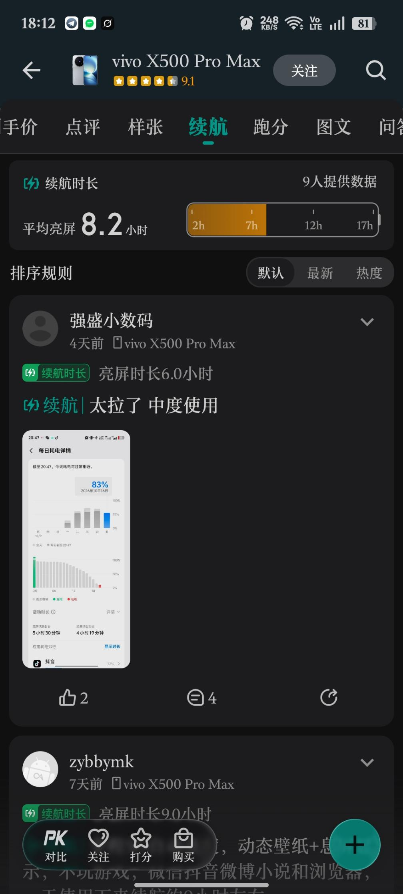
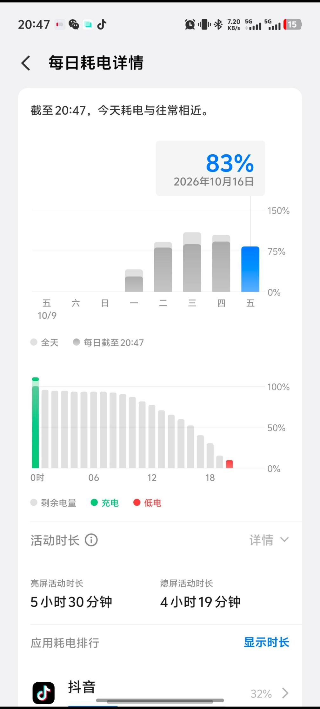
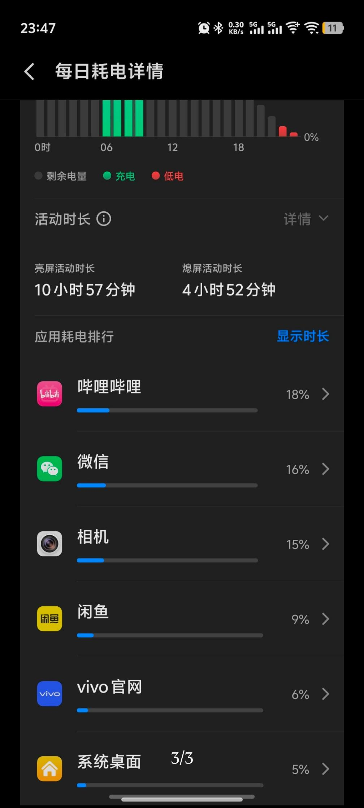
تُظهر التقييمات أن التصوير من أبرز نقاط القوة في الجهاز، خصوصًا مع كاميرا التقريب بدقة 200MP وعدسة Zeiss ببعد بؤري 85mm، وفقًا للمواصفات الواردة في البيانات المقدمة.
ويُفترض أن يكون هذا التكوين مناسبًا للبورتريه والتصوير البعيد، حيث تساعد المسافة البؤرية الأطول على تقديم منظور مختلف للوجوه وعزل بصري مناسب بحسب ظروف التصوير والمعالجة المستخدمة.
كما حصلت الشاشة بدقة 2K+ ومعدل تحديث 144Hz على تقييم مرتفع نسبيًا، في حين تشير البيانات المتاحة إلى أداء جيد للكاميرا الرئيسية في النطاق الديناميكي.
في المقابل، ظهرت ملاحظات على انخفاض أداء الرسوميات تحت الضغط الطويل، مع تسجيل حرارة تقارب 41 درجة مئوية في بعض الاختبارات المذكورة، إضافة إلى الوزن المرتفع نسبيًا.
ويجب التعامل بحذر مع متوسط وقت الشاشة البالغ 8.2 ساعات؛ فالعينة المكونة من تسعة مشاركين صغيرة مقارنة بعينات بقية الأجهزة، ولا تكفي للحكم بأن بطارية vivo أضعف منها بصورة قاطعة.
يبرز vivo في التصوير والشاشة، لكن تقييم البطارية يحتاج إلى عينة أكبر واختبارات أكثر توحيدًا.
Xiaomi 18 Pro Max: بطارية قوية وتقييم مثير للجدل للشاشة
يمثل Xiaomi الحالة الأكثر اختلافًا في هذه المقارنة؛ إذ حصل على تقييم إجمالي يبلغ 7.7/10، رغم تسجيله تقييمات مرتفعة للبطارية والتصوير.
- البطارية: 9.6/10.
- التصوير: 9.3/10.
- الشاشة: 5.9/10.
- متوسط وقت الشاشة المعلن: 12 ساعة، وفقًا لـ42 مشاركًا.
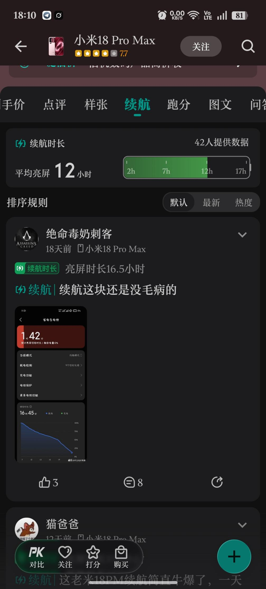
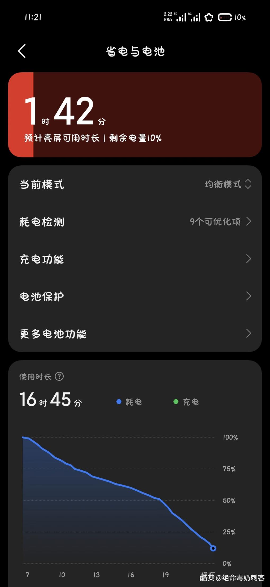
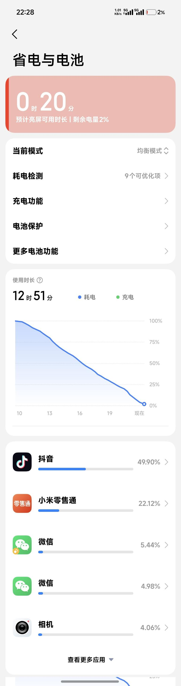
أبرز ما يلفت الانتباه هو الفارق الكبير بين تقييم الشاشة وتقييم البطارية. فبينما تشير الأرقام إلى رضا مرتفع عن عمر البطارية والتصوير، حصلت الشاشة على تقييم أقل بكثير.
وتربط التجارب الواردة في البيانات هذه الملاحظات بميزة Privacy Display، التي تهدف إلى الحد من رؤية محتوى الشاشة من الزوايا الجانبية. وتشمل الشكاوى المذكورة تأثر السطوع والألوان وزوايا الرؤية، إلى جانب تقارير عن ميل اللون إلى الأخضر عند النظر من الجوانب، حتى مع إيقاف الميزة.
ومع ذلك، لا يكفي التقييم المنخفض وحده لإثبات أن ميزة الخصوصية هي السبب المباشر؛ إذ يتطلب ذلك مراجعة التجارب الأصلية واختبارات مستقلة للشاشة في أوضاع التشغيل المختلفة.
أما الأداء، فقد وردت تقارير مبكرة عن ارتفاع الحرارة ومشكلات الاستقرار في بعض الوحدات. ويجب التحقق من طبيعة هذه المشكلات ومدى انتشارها قبل تعميمها على الجهاز بأكمله.
يقدم Xiaomi مؤشرات قوية على البطارية والتصوير، لكن تجربة الشاشة هي الجانب الأكثر حاجة إلى التحقق قبل اتخاذ قرار الشراء.
مقارنة البطارية: من الأفضل وفقًا للتجارب المنشورة؟
| الهاتف | متوسط وقت الشاشة | عدد المشاركين |
|---|---|---|
| Xiaomi 18 Pro Max | 12 ساعة | 42 |
| OPPO Find X10 Pro Max | 11.3 ساعة | 40 |
| HONOR Magic9 Pro Max | 10.6 ساعات | 81 |
| vivo X500 Pro Max | 8.2 ساعات | 9 |
بحسب الأرقام المقدمة، يتصدر Xiaomi في متوسط وقت الشاشة، يليه OPPO ثم HONOR، بينما يسجل vivo أقل متوسط.
لكن هذه النتائج ليست اختبارًا موحدًا لعمر البطارية. فقد تختلف مستويات السطوع، وشبكات الاتصال، والألعاب، ومدة التصوير، والتطبيقات المستخدمة بين المشاركين. كما أن اختلاف أحجام العينات يجعل المقارنة المباشرة أقل موثوقية، خصوصًا في حالة vivo.
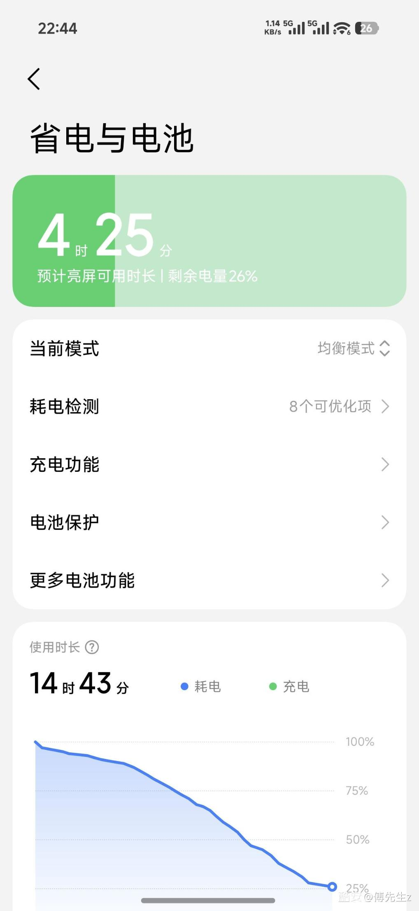
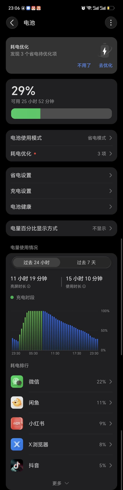
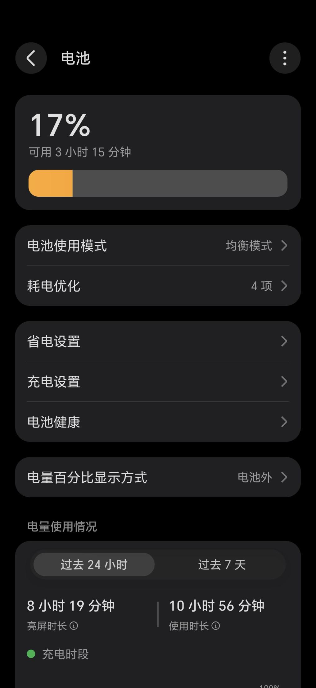
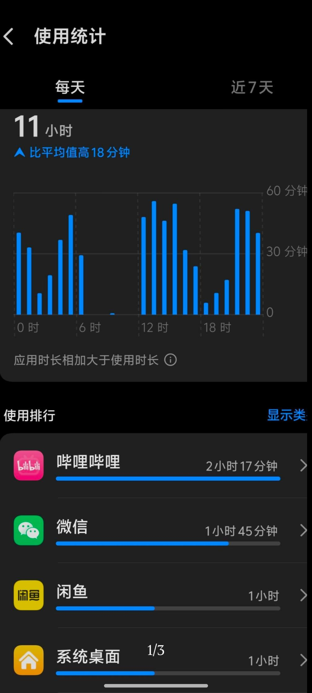
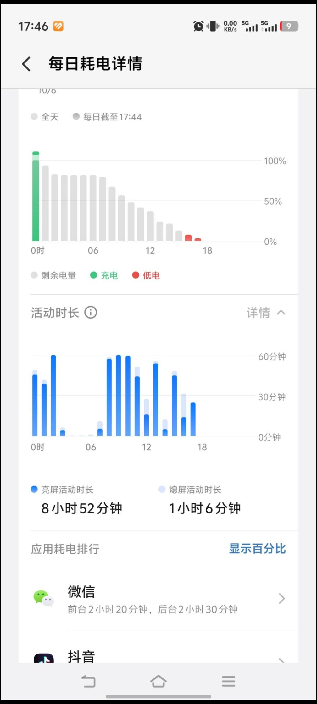
وللحصول على نتيجة أكثر دقة، نحتاج إلى اختبارات متطابقة في السطوع والشبكة والمهام، مع قياس استهلاك الطاقة ودرجات الحرارة.
ماذا تخبرنا التقييمات عن الأداء والحرارة؟
الأداء الأقصى ليس المعيار الوحيد للهاتف الرائد. فالمستخدم يحتاج إلى جهاز يحافظ على سرعة الاستجابة أثناء الألعاب والتصوير والمهام الطويلة، لا جهاز يقدم أرقامًا مرتفعة في اختبار قصير فقط.
تشير البيانات الواردة إلى ملاحظات حرارية متفاوتة في بعض أجهزة هذه المجموعة، تشمل انخفاض الأداء تحت الضغط المستمر وتقارير عن ارتفاع الحرارة أو عدم الاستقرار في بعض الوحدات.
لكن من الضروري الفصل بين ثلاثة أمور:
- الأداء القصير: السرعة التي يحققها الهاتف في بداية الاختبار.
- الأداء المستدام: قدرته على المحافظة على الأداء بعد استمرار الضغط.
- الحرارة في الاستخدام اليومي: وتتأثر بالسطوع والشبكة والطقس والتطبيقات والتحديثات.
ولا يمكن اعتبار ملاحظة حرارية في اختبار واحد دليلًا على وجود مشكلة لدى جميع المستخدمين. كذلك، فإن ربط هذه الظواهر بمعمارية تصنيع معينة للمعالج يحتاج إلى بيانات تقنية مستقلة، وليس إلى تقييمات الملاك وحدها.
كيف ينبغي قراءة تقييمات Coolapk؟
تقدم تقييمات المستخدمين مؤشرًا مهمًا على الرضا عن المنتج، لكنها ليست بديلًا عن الاختبارات المستقلة. هناك أربعة عوامل تستحق الانتباه:
- حجم العينة: كلما زاد عدد المشاركين، أصبحت قراءة الاتجاه العام أكثر فائدة، مع بقاء احتمال التحيز قائمًا.
- طريقة احتساب التقييم: قد تختلف معايير التصويت بين المستخدمين والأقسام التفصيلية.
- طبيعة الاستخدام: تختلف تجربة لاعب عن تجربة مستخدم يهتم بالتصوير أو عمر البطارية.
- التحديثات: قد تتغير الحرارة والاستقرار واستهلاك الطاقة بعد تحديثات النظام، ولذلك يجب معرفة إصدار البرنامج المستخدم عند جمع البيانات.
وتوضح حالة OPPO تحديدًا أهمية النظر إلى التفاصيل؛ فالتقييم العام 9.2/10 يخفي تفاوتًا بين البطارية التي حصلت على 9.8/10 والقيمة مقابل السعر التي سجلت 7.3/10.
الخلاصة
لا تقدم هذه المقارنة فائزًا مطلقًا، بل تكشف عن أربعة توجهات مختلفة:
- HONOR Magic9 Pro Max: تقييم إجمالي مرتفع مع نتائج قوية للشاشة والبطارية.
- OPPO Find X10 Pro Max: بطارية وتصميم يحظيان بتقدير مرتفع، مع ملاحظة تتعلق بالقيمة مقابل السعر.
- vivo X500 Pro Max: توجه واضح نحو التصوير البعيد والبورتريه، مع حاجة إلى بيانات بطارية أكثر موثوقية.
- Xiaomi 18 Pro Max: نتائج مرتفعة للبطارية والتصوير، مقابل تساؤلات مهمة حول تجربة الشاشة.
أما للمستخدم في الخليج، فلا ينبغي إغفال دعم نطاقات الشبكات المحلية، والخدمات المتاحة في النسخة الصينية، والضمان، وتكلفة الاستيراد، وتوافر قطع الغيار.
أعلى تقييم لا يعني بالضرورة أفضل هاتف لك. الأهم أن تتكرر التجربة الجيدة لدى عدد كافٍ من المستخدمين، وأن يحافظ الجهاز على أدائه في الاستخدام اليومي، وأن تكون نقاط ضعفه مقبولة مقابل سعره.
#midroid5G #vivo #Xiaomi #OPPO #HONOR